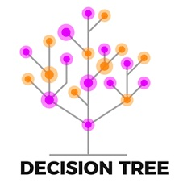

In this project I cleaned Business data and explored insights using SQL Server. Cleaned data by creating a staging table to transform the data to showcase only relevant information that is needed for analysis. Deleting unneeded coloumns and duplicates as well as handling NULL values. Then, exploring data that is required out of the dataset.
Data Exploration of Car data using SQL whilst using commands such as SELECT, FROM, WHERE. These commands are used to present specific data of the large database that can be used in analysis.
A Dashboard created on Tableau regarding Job salaries data showcasing visualizations.
Tableau Project that shows insights for Housing predictions by creating multiples sheets which are then linked in the Dashboard.
Exploring Wine data using python to create predictions by visualising graphs interpreting data into training and testing models. Using confusion matrices to run through these models to present the accuracy of the data.

Analysing data using python by showcasing the ideas of classification and logistic regression. Wrangling data to change coloumn names to convert raw data to a useable form as well as creating predictions and increasing accuracy of the predictions by using Gridsearch CV.
Creating a Rock-Paper-Scissor game against the computer by using complex codes such as 'if' and 'else'. You can give it a go have fun!